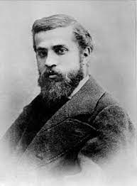

IDU Week
Lugares En España
Places In Spain
Hola!
España es famosa por su hermosa y sorprendente arquitectura. Hay varios edificios famosos ubicados en España, algunos de los cuales son la Sagrada Familia y el estadio Santiago Bernabéu. También hubo algunos arquitectos famosos como Antoni Gaudí y Santiago Calatrava.
Videos
Lugares

Este es el estadio Santiago Bernabéu y en él juega el equipo de fútbol / fútbol de clase mundial Real Madrid. Fue inaugurado el 14 de diciembre de 1947 por varios arquitectos.

Esta es La Sagrada Familia, una de las iglesias más famosas del mundo. Su construcción se inició en el año 1882 y se inauguró después de más de cien años en 2010, pero la construcción aún no está completamente terminada.

Este es Antoni Gaudí. Creó la Sagrada Familia y muchos más lugares famosos de España. Nació el 25 de junio de 1852 y murió el 10 de junio de 1926.
Articulos
17 Places to visit in SpainSome famous Spanish architects
Most vidited cities in Spain